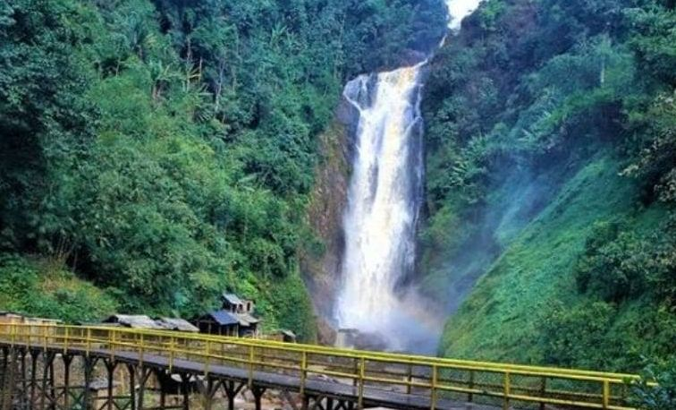

Air Terjun Bedegung
Air Terjun Bedegung, yang juga dikenal sebagai Curup Tenang, merupakan salah satu air terjun tertinggi di Sumatera Selatan dengan ketinggian sekitar 99 meter, terletak di Desa Bedegung, Kecamatan Tanjung Agung, Kabupaten Muara Enim. Air terjun ini berasal dari mata air pegunungan Bukit Barisan yang jernih dan tidak pernah kering, menjatuhkan aliran deras ke bebatuan di bawahnya dan menciptakan suasana alam yang asri dan menenangkan. Akses menuju lokasi cukup mudah, hanya memerlukan trekking ringan sejauh 200–600 meter melalui jalur berpaving dan jembatan kecil, sehingga cocok dikunjungi oleh semua kalangan. Fasilitas di sekitar lokasi cukup lengkap, seperti area parkir, gazebo, musala, warung, dan spot foto menarik yang mempercantik pengalaman wisata. Dengan tiket masuk yang sangat terjangkau, Air Terjun Bedegung menjadi destinasi favorit untuk bersantai, bermain air, menikmati udara sejuk, dan menikmati keindahan alam khas Sumatera Selatan.
Kembali